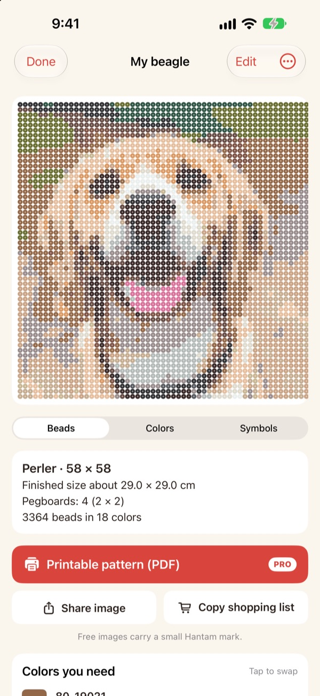
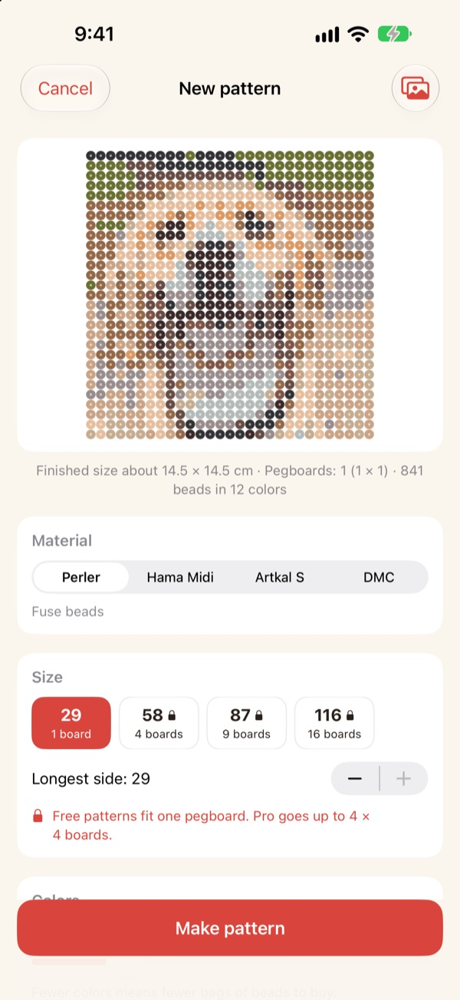
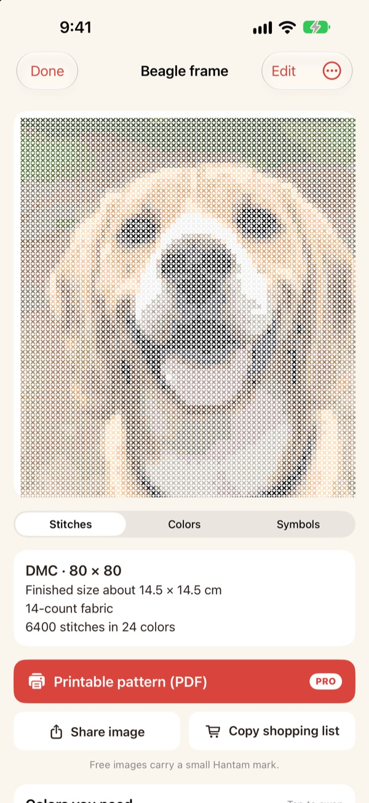
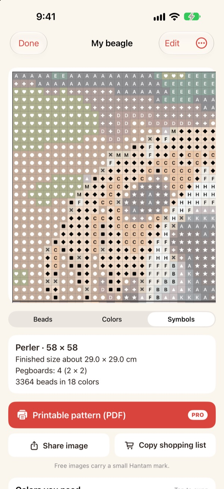
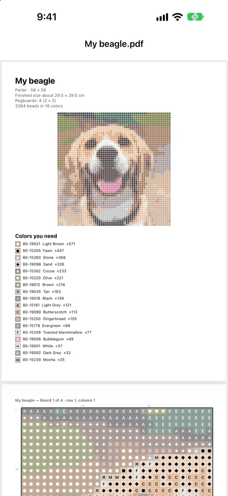

Turn a photo
into a pattern
Pick a photo of your pet, your face or a favorite character. Hantam turns it into a fuse bead or cross-stitch pattern, matched to colors you can actually buy.
Free for one-pegboard patterns. Photos never leave your iPhone.

Try it on a photo
This is the same color matching the app uses, with the real Perler color chart. Change the size and the number of colors, or try one of your own photos.
A pattern is easy. Matching it to real beads isn't.
Pixelate a photo in any editor and you get colors no bead or thread actually comes in. Then you have to guess which jar each square belongs to and count how many of each to buy. Hantam picks from colors that are actually sold, and tells you exactly how many you need.
Real colors, real numbers
Choose Perler, Hama Midi, Artkal S beads or DMC thread. Every square is matched to a color that brand really sells, and labeled with its color number.
Set the size and how many colors to use. Big patterns are split into 29 × 29 pegboards.

Cross-stitch, too
Pick DMC thread and the same photo becomes a cross-stitch chart. Choose 11, 14, 16 or 18-count Aida and Hantam shows the finished size and how many stitches each color needs.

Know exactly what to buy
Switch to the symbol chart to follow along square by square, with bold lines at every board edge or every 10 stitches. See how many beads each color takes and Copy shopping list in one tap.
Tap a square to change it, or swap one color for another everywhere.

Print it and start
With Pro, export a Printable pattern (PDF): the color list first, then symbol charts split page by page, one pegboard at a time.

Three steps to a pattern
- 1
Choose a photo
Pets, faces, logos and characters all work. A clear subject turns out best.
- 2
Pick beads or thread
Choose the brand, the size and how many colors.
- 3
Make it
Follow the chart on screen, or print it with Pro.
Materials and sizes
- Perler · Hama Midi · Artkal S
- Fuse beads, 29 × 29 pegboards, each bead about 5 mm
- DMC
- Cross-stitch thread on 11, 14, 16 or 18-count Aida
- Free
- Beads up to 1 pegboard (29 squares), thread up to 40 stitches on the longest side
- Pro
- Beads up to 4 × 4 pegboards (116 squares), thread up to 200 stitches
- Colors
- From 2 to 50 per pattern
Perler, Hama, Artkal and DMC are trademarks of their respective owners. Hantam is not affiliated with them. Colors on screen may look slightly different from the real thing.
Start free. Go Pro for bigger patterns and printing.
Free
- Patterns up to one pegboard, or 40 stitches
- Every brand: Perler, Hama, Artkal and DMC
- Color counts, shopping list and color swaps
- Keep up to 3 patterns
- Share images with a small Hantam mark
Hantam Pro
- Printable PDF patterns
- Up to 4 × 4 pegboards, or 200 stitches
- Unlimited saved patterns
- Images without the mark
- Every pixel art tool
Monthly or yearly subscription, or a one-time lifetime purchase
You can also give Pro to a friend as a gift from inside the app.
Questions
Do you upload my photos?
No. Photos and patterns are processed and saved on your iPhone only.
The colors look a little different from my beads.
Screens show colors differently from real plastic and thread. Tap a color in the list to swap it for a closer one from the same brand.
How big can a pattern be?
Free patterns fit one 29 × 29 pegboard, or 40 stitches on the longest side. Pro goes up to 4 × 4 pegboards (116 beads) or 200 stitches.
Which photos work best?
Photos with one clear subject and a simple background. Fewer colors give cleaner patterns, so try lowering the color count if the result looks noisy.
Can I still make pixel art?
Yes. You can pixelate photos, draw along with 110 samples and animate frame by frame. Every pixel art tool is included in Pro.
How do I restore my purchase?
Open Settings in the app and tap Restore Purchases. Use the same Apple Account you bought Pro with.
How do I cancel a subscription?
Go to iPhone Settings › your name › Subscriptions and choose Hantam. Lifetime access is a one-time purchase and never renews.
How do I report a bug or suggest an idea?
The fastest way is Settings › Send Feedback inside the app. You can also email us at the address below or send an Instagram DM to @lee25_ios.
Questions, bug reports and ideas are all welcome at leeo@kakao.com.